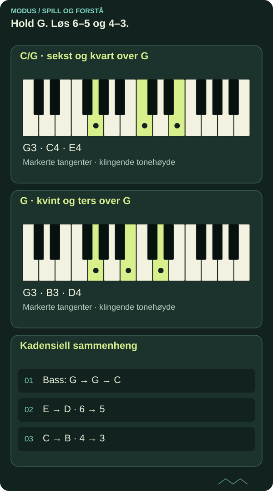

Sekstkvartakkorder: hør hva bassen gjør
En treklang med kvinten nederst kan få flere oppgaver. Skill kadensiell, gjennomgangs- og pedal-sekstkvart ved å følge bassen og de øvre stemmene.
DETTE LÆRER DU
Sekstkvartakkorder: hør hva bassen gjør
- Skille tre vanlige 6/4-sammenhenger.
- Realisere 6–5 og 4–3 over dominantbass.

Tallene beskriver avstand fra bass
C/G har G nederst, med C en kvart og E en sekst over bassen. Derfor heter denne treklangsomvendingen 6/4 i generalbass. Tallene sier ikke at enhver slik klang fungerer som stabil tonika. Det avgjøres av plasseringen og fortsettelsen.
C/E har derimot E i bassen og betegnes 6 i vanlig forkortet generalbass. Et akkordsymbol med skråstrek viser faktisk bass; en generalbassfigur beskriver intervaller over den. Hold disse to notasjonssystemene atskilt.

Les diagrammet som tekst
- C/G · sekst og kvart over G: G3 → C4 → E4
- G · kvint og ters over G: G3 → B3 → D4
- Kadensiell sammenheng: Bass: G → G → C; E → D · 6 → 5; C → B · 4 → 3
Kadensiell 6/4 forlenger dominanten
Spill C/G–G7–C i C-dur. Over G-bassen kan C gå til B, 4–3, og E gå til D, 6–5. Det første øyeblikket inneholder tonene i C-dur, men inngår her i en dominantforberedelse eller dominantutvidelse. Tradisjoner kan skrive I6/4 eller en dominantfigur med 6–5 og 4–3. Forklar hvilken analyse du bruker.
Legg C/G på et betont slag og la oppløsningen komme etterpå. Skriv ikke automatisk en tonikafunksjon bare fordi akkordtonene er C–E–G. Den holdte bassen G og de trinnvise oppløsningene viser retningen.
Hør hvordan bassen binder kadensen sammen
Spill D/A – A – D i D-dur. Hold A i bassen gjennom de to første klangene. A er femte skalatrinn og fungerer som dominantbass. Lytt først til bassen alene. Den står stille mens overstemmene beveger seg, og går så fra A til D når tonika kommer.
D/A inneholder tonene i D-durtreklangen med kvinten nederst. Derfor kan klangen noteres I⁶₄. I denne kadensen har den dominantfunksjon. Den ligger over dominantbassen og løses videre til A-dur over samme bass.
Spill i 4/4. Hold D/A i to slag og A-dur i to slag. Spill D-dur fra første slag i neste takt.
| Stemme | D/A | A | D |
|---|---|---|---|
| Sopran | F♯4 | E4 | F♯4 |
| Alt | D4 | C♯4 | D4 |
| Tenor | A3 | A3 | A3 |
| Bass | A2 | A2 | D3 |
Generalbasstallene angir intervaller over bassen. Når en stemme ligger i et høyere register, regnes intervallet som det tilsvarende enkle intervallet etter oktavreduksjon. Over A2 ligger F♯4 en trettendedel og D4 en ellevtedel opp. De leses her som henholdsvis sekst og kvart. Mens bassen holder A, gir F♯→E derfor 6–5 og D→C♯ 4–3.
Spill de to overgangene hver for seg. Hør først hvordan 6/4-klangen løses over den faste bassen. Hør deretter hvordan bassen A→D og ledetonen C♯→D markerer ankomsten på tonika.
Forstå
Hvilket trinn ligger i bassen, og hvilke toner går 6–5 og 4–3?
Anvend
Transponer den viste kadensen til G-dur. Skriv bass og de to bevegelige stemmene.
Utforsk
Spill først med D i bassen gjennom de to første klangene i G-dur. Spill deretter G i bassen under første klang. Lytt etter om du fortsatt hører samme spenning over en fast dominantbass.
Fasit og vurdering
A er femte skalatrinn i D-dur. F♯–E og D–C♯ gir 6–5 og 4–3. I G-dur blir bassen D–D–G, og de to stemmene B–A–B og G–F♯–G. Med G i første bass opphører 6/4-omvendingen, og dominantbassen kommer først under D-durtreklangen.
Se Treklanger og omvendinger for notasjonen og Music Theory for the 21st-Century Classroom, The Cadential Six-Four Chord for funksjonsanalysen.
Gjennomgang og pedal gir andre roller
I C–G/D–C/E går bassen C–D–E. Mellomklangen G/D kan forbinde tonika i grunnstilling med tonika i første omvending som gjennomgangs-sekstkvart. I C–F/C–C ligger bassen C stille mens E–G kan bevege seg til F–A og tilbake. F/C kan da være pedal-sekstkvart.
Dette er kontekstmodeller, ikke navn du velger bare fra en enkelt vertikal klang. Undersøk taktvekt, basslinje og hvilke stemmer som går videre. En lang F/C i et poparrangement kan ha en annen formfunksjon enn en kort naboklang i klassisk sats.
Realisering på to instrumenter
På piano: hold G2, spill C4–E4, så B3–D4 og deretter C4–E4 over C3. Legg F4 til mellomklangen hvis du vil høre dominantseptimen og la den gå til E4 i en tilpasset stemme. Unngå å tilføre flere toner enn du kan følge.
På gitar kan C/G spilles 332010, G7 som 320001 og C som x32010. Spill langsomt og finn den øverste E–F–E-linjen; den viser en annen stemme enn 6–5. Ta også opp bare G–G–C i bassen med C–B–C over. Lever tre korte modeller og begrunn forskjellen. Kontrollér satsen på den stilen du har valgt.
Kildegrunnlag og faglig status
Original norsk MODUS-tekst med egne undervisningseksempler. Faglig referansegrunnlag for videre kontroll:
Under arbeid – ikke faglig sluttgodkjent. Artikkelen dokumenterer ingen personlig mestring og gir ingen formell studie- eller publiseringsgodkjenning. Skriftlig forklaring, faktisk spill og lytting må vurderes hver for seg.
FRA LESING TIL SPILLING
Prøv det selv.
Noter og spill kadensiell 6/4, gjennomgangs-6/4 og pedal-6/4. Marker bass og alle trinnvise oppløsninger. Lag deretter en ny variant i G-dur.
- Gjør et selvstendig første forsøk før du ser quizfasiten.
- Spill den konkrete modellen på gitar og piano, og lytt til forskjellen.
- Lag en ny variant og behold første og bearbeidede versjon separat.
SJEKK FORSTÅELSEN
Hva sitter igjen?
Tre spørsmål om det du har lest. Alle tre riktige gir fullført quiz. Du kan prøve så mange ganger du vil.
Fullføring lagres i denne nettleseren og deles mellom norsk og engelsk.
Du har svart riktig på alle tre spørsmålene. Ta ideen med til instrumentet.
Til artikkelbiblioteket ↗︎ANBEFALT NESTE STEG
SATB: fordel stemmer og løs tendensene
Neste del av den foreslåtte faglige ruten. Velg emner ut fra forkunnskap og behov.
SATB: fordel stemmer og løs tendensene ↗︎